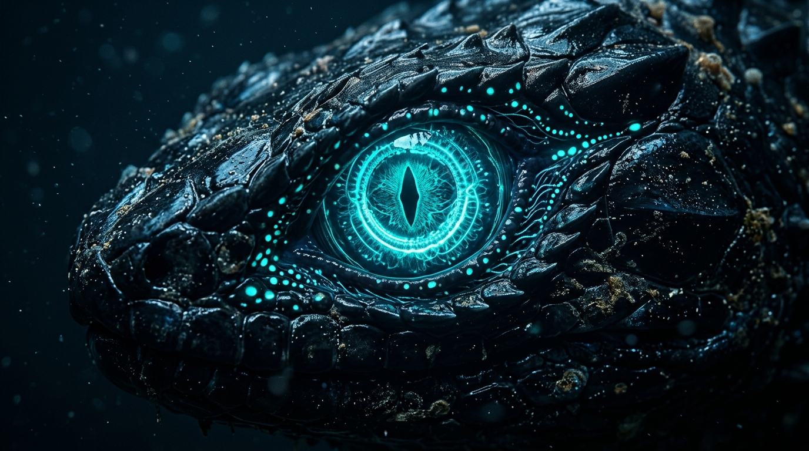
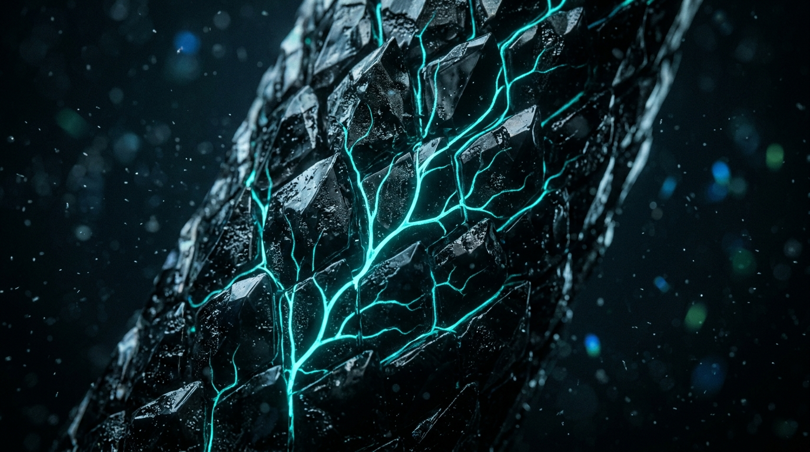
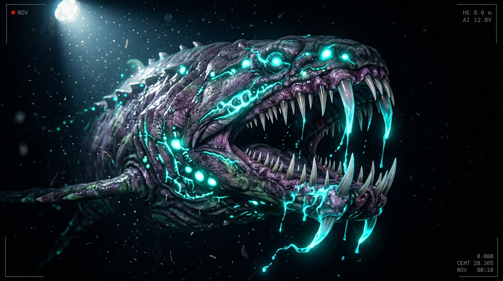

Sub-benthic Apex Morphology & Discovery Context
At 03:14 UTC, ROV-VØR-IV penetrated the benthic veil of the Romanche Depths at -9,820 meters. Caustic sonar scattering revealed an eighty-four-meter serpentine apex organism navigating sunken megalithic architecture. The specimen exhibits spontaneous bioluminescent discharge along its dorsal scale ridges at a wavelength of 490nm, creating a synchronized optical field that illuminates abyssal darkness.
ANATOMICAL SPECIMEN PLATES [01 - 03]
CLICK CARD TO EXPAND DIAGNOSTIC REPORT
Cranial Photophores & Optic Ganglia
Dual compound retinas adapted for near-absolute zero lux. Dorsal photophore plates emit coherent 490nm cyan pulses to communicate across hadal zones.

Crystalline Dermal Scutum Lattice
Interlocking biogenic titanium-chitin scales capable of resisting 1,120 bar hydrostatic crush pressure with laminar micro-riblet fluid channeling.

Mandibular Venom Ducts & Prey Ingestion
Retractable recurved mandibular fangs with pressurized neurotoxic channels. The venom exhibits intense phosphorescent luminescence upon exposure to sea water, paralyzing prey via instantaneous synaptic inhibition.
Expedition Acoustic Transmissions
Acoustic Sonar Visualizer (360° Sweep)
BEARING: 037° // RANGE: 1.42 KM // SIGNAL: 98.4dB // THREAT: OMEGA